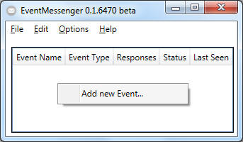

In order to respond to events from the locking system management software
(LSM.Basic.Online) you need to create these events in the EventMessenger
Software.
Please do a "right mouse button press" on an empty space within the
EventMessenger Software ans select the only available option "Add new Event...".
HINT: You always need to create an event before adding responses to it.